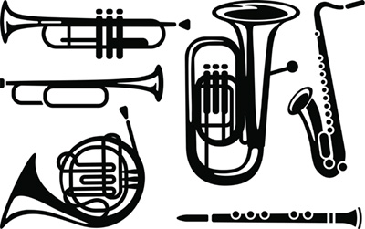

To calculate the speed of sound in air using the observed frequencies produced due to the Doppler
effect.
Materials
Electric skateboard (1)
Tone generator (2)
GPS device (3)
Electric tuner (4)
Apparatus

GPS and tone generator on an electric skateboard,
emitting a sound toward electric tuner.
Method
Place the GPS device and tone generator on the skateboard.
Place the electric tuner on the ground.
Turn on the tone generator and record the frequency of the sound at rest.
Drive the skateboard toward the electric tuner.
While the skateboard is moving at a constant speed, record the speed from the GPS and the
observed frequency from the electric tuner.
Results
At rest, the frequency of the tone generator was 815.06 Hz.
While the skateboard was moving, the observed speed was 38.65 m/s. The observed frequency was 916.08
Hz.
Analysis
Using the Doppler effect formula for an approaching object, calculate the speed of sound based
on the results.
Given:
Unknown:
Equation:
Solve:
We used the Doppler equation with minus in the denominator because the object is
moving towards the
observer.
(Being sure to use all decimals in the calculation)
Statement:
The speed of sound was measured to be .
Find the theoretical speed of sound in air at 16.0 °C using the speed of sound formula.
Given:
Unknown:
Equation:
Solve:
Statement:
The theoretical speed of sound in air at 16.0 °C is .
Find the percent error in the experimental speed of sound calculation compared to the
theoretical speed of sound in air.
Given:
Unknown:
Equation:
Solve:
Statement:
The percent error is 2.650%.
What possible sources of error may have affected the accuracy of the results?
There are several possible sources of error. If the skateboard were not aimed directly at the
electric tuner, the GPS’s speed would not be the correct speed – the Doppler effect requires the
speed toward the observer. It is also possible that the temperature in the room is not exactly
16.0 °C. This measurement error would give the wrong theoretical value.
Conclusion
Based on the results of this lab experiment, the speed of sound in the room was 350.5 m/s. This result closely matches the theoretical value.